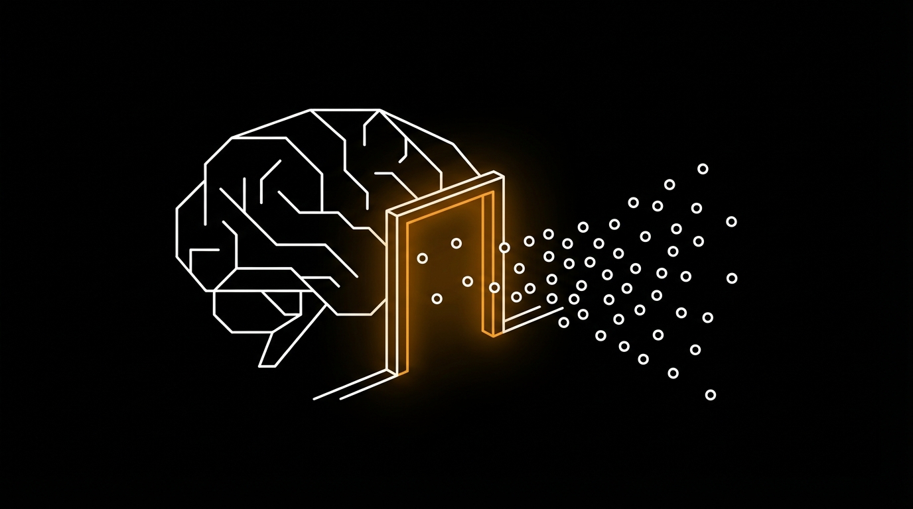

<!DOCTYPE html>
<html lang="en">
<head>
  <meta charset="UTF-8">
  <meta name="viewport" content="width=device-width, initial-scale=1.0">
  <title>The Gatekeeper Method</title>
  <script src="https://cdn.tailwindcss.com"></script>
  <script src="https://unpkg.com/react@18/umd/react.production.min.js"></script>
  <script src="https://unpkg.com/react-dom@18/umd/react-dom.production.min.js"></script>
  <script src="https://unpkg.com/@babel/standalone/babel.min.js"></script>
  <script src="https://unpkg.com/framer-motion@10.16.4/dist/framer-motion.js"></script>
  <link href="https://fonts.googleapis.com/css2?family=Inter:wght@300;400;500;600;700;800&display=swap" rel="stylesheet">
  <script>
    tailwind.config = {
      theme: {
        extend: {
          colors: {
            accent: {
              DEFAULT: '#d97706',
              50: '#fffbeb',
              100: '#fef3c7',
              200: '#fde68a',
              300: '#fcd34d',
              400: '#fbbf24',
              500: '#f59e0b',
              600: '#d97706',
              700: '#b45309',
              800: '#92400e',
              900: '#78350f',
            }
          },
          fontSize: {
            'xs': ['0.75rem', { lineHeight: '1.5' }],
            'sm': ['0.875rem', { lineHeight: '1.5' }],
            'base': ['1rem', { lineHeight: '1.7' }],
            'lg': ['1.125rem', { lineHeight: '1.6' }],
            'xl': ['1.25rem', { lineHeight: '1.5' }],
            '2xl': ['1.5rem', { lineHeight: '1.4' }],
            '3xl': ['1.875rem', { lineHeight: '1.3' }],
            '4xl': ['2.25rem', { lineHeight: '1.2' }],
          }
        }
      }
    }
  </script>
  <style>
    * { font-family: 'Inter', -apple-system, BlinkMacSystemFont, sans-serif; }
    body { background: #FFFFFF; color: #1a1a1a; }
    ::selection { background: #d97706; color: #fff; }
    h1, h2, h3, h4 { letter-spacing: -0.025em; }
    .lesson-container { max-width: 800px; margin: 0 auto; }
    .gradient-accent { background: linear-gradient(135deg, #d97706 0%, #b45309 50%, #78350f 100%); }
    .glow-accent { box-shadow: 0 0 60px rgba(217,119,6,0.3); }
  </style>
</head>
<body>
  <div id="root"></div>

  <script type="text/babel">
    const { motion, useInView, AnimatePresence } = window.Motion;
    const { useState, useRef, useEffect } = React;

    const smoothEase = [0.25, 0.4, 0.25, 1];

    // Clean SVG Icons
    const Icons = {
      Brain: () => (
        <svg width="20" height="20" viewBox="0 0 24 24" fill="none" stroke="currentColor" strokeWidth="2" strokeLinecap="round" strokeLinejoin="round">
          <path d="M12 5a3 3 0 1 0-5.997.125 4 4 0 0 0-2.526 5.77 4 4 0 0 0 .556 6.588A4 4 0 1 0 12 18Z"/>
          <path d="M12 5a3 3 0 1 1 5.997.125 4 4 0 0 1 2.526 5.77 4 4 0 0 1-.556 6.588A4 4 0 1 1 12 18Z"/>
          <path d="M12 5v13"/>
        </svg>
      ),
      Zap: () => (
        <svg width="20" height="20" viewBox="0 0 24 24" fill="none" stroke="currentColor" strokeWidth="2" strokeLinecap="round" strokeLinejoin="round">
          <polygon points="13 2 3 14 12 14 11 22 21 10 12 10 13 2"/>
        </svg>
      ),
      Target: () => (
        <svg width="20" height="20" viewBox="0 0 24 24" fill="none" stroke="currentColor" strokeWidth="2" strokeLinecap="round" strokeLinejoin="round">
          <circle cx="12" cy="12" r="10"/><circle cx="12" cy="12" r="6"/><circle cx="12" cy="12" r="2"/>
        </svg>
      ),
      Search: () => (
        <svg width="20" height="20" viewBox="0 0 24 24" fill="none" stroke="currentColor" strokeWidth="2" strokeLinecap="round" strokeLinejoin="round">
          <circle cx="11" cy="11" r="8"/><path d="m21 21-4.3-4.3"/>
        </svg>
      ),
      HelpCircle: () => (
        <svg width="20" height="20" viewBox="0 0 24 24" fill="none" stroke="currentColor" strokeWidth="2" strokeLinecap="round" strokeLinejoin="round">
          <circle cx="12" cy="12" r="10"/><path d="M9.09 9a3 3 0 0 1 5.83 1c0 2-3 3-3 3"/><path d="M12 17h.01"/>
        </svg>
      ),
      ArrowRight: () => (
        <svg width="18" height="18" viewBox="0 0 24 24" fill="none" stroke="currentColor" strokeWidth="2" strokeLinecap="round" strokeLinejoin="round">
          <line x1="5" y1="12" x2="19" y2="12"/><polyline points="12 5 19 12 12 19"/>
        </svg>
      ),
      Shield: () => (
        <svg width="20" height="20" viewBox="0 0 24 24" fill="none" stroke="currentColor" strokeWidth="2" strokeLinecap="round" strokeLinejoin="round">
          <path d="M12 22s8-4 8-10V5l-8-3-8 3v7c0 6 8 10 8 10z"/>
        </svg>
      ),
      Filter: () => (
        <svg width="20" height="20" viewBox="0 0 24 24" fill="none" stroke="currentColor" strokeWidth="2" strokeLinecap="round" strokeLinejoin="round">
          <polygon points="22 3 2 3 10 12.46 10 19 14 21 14 12.46 22 3"/>
        </svg>
      ),
      ChevronDown: () => (
        <svg width="16" height="16" viewBox="0 0 24 24" fill="none" stroke="currentColor" strokeWidth="2" strokeLinecap="round" strokeLinejoin="round">
          <path d="m6 9 6 6 6-6"/>
        </svg>
      ),
      Key: () => (
        <svg width="20" height="20" viewBox="0 0 24 24" fill="none" stroke="currentColor" strokeWidth="2" strokeLinecap="round" strokeLinejoin="round">
          <path d="m21 2-2 2m-7.61 7.61a5.5 5.5 0 1 1-7.778 7.778 5.5 5.5 0 0 1 7.777-7.777zm0 0L15.5 7.5m0 0 3 3L22 7l-3-3m-3.5 3.5L19 4"/>
        </svg>
      ),
    };

    // Animation Components
    function FadeUp({ children, delay = 0, className = "" }) {
      const ref = useRef(null);
      const isInView = useInView(ref, { once: true, margin: "-80px" });
      return (
        <motion.div
          ref={ref}
          className={className}
          initial={{ opacity: 0, y: 40 }}
          animate={isInView ? { opacity: 1, y: 0 } : {}}
          transition={{ duration: 0.7, delay, ease: smoothEase }}
        >
          {children}
        </motion.div>
      );
    }

    function ScaleIn({ children, delay = 0, className = "" }) {
      const ref = useRef(null);
      const isInView = useInView(ref, { once: true, margin: "-50px" });
      return (
        <motion.div
          ref={ref}
          className={className}
          initial={{ opacity: 0, scale: 0.95 }}
          animate={isInView ? { opacity: 1, scale: 1 } : {}}
          transition={{ duration: 0.6, delay, ease: smoothEase }}
        >
          {children}
        </motion.div>
      );
    }

    function Counter({ end, suffix = "", prefix = "" }) {
      const [count, setCount] = useState(0);
      const ref = useRef(null);
      const isInView = useInView(ref, { once: true });

      useEffect(() => {
        if (isInView) {
          let start = 0;
          const duration = 2000;
          const increment = end / (duration / 16);
          const timer = setInterval(() => {
            start += increment;
            if (start >= end) {
              setCount(end);
              clearInterval(timer);
            } else {
              setCount(Math.floor(start));
            }
          }, 16);
          return () => clearInterval(timer);
        }
      }, [isInView, end]);

      return <span ref={ref}>{prefix}{count}{suffix}</span>;
    }

    // Interactive Move Card - Elite Version
    function MoveCard({ number, title, subtitle, description, example, icon: Icon }) {
      const [expanded, setExpanded] = useState(false);

      return (
        <motion.div
          className={`rounded-2xl cursor-pointer transition-all border-2 ${expanded ? 'bg-accent-50 border-accent-300' : 'bg-neutral-50 border-neutral-200 hover:border-neutral-300'}`}
          onClick={() => setExpanded(!expanded)}
          whileHover={{ scale: 1.01 }}
          whileTap={{ scale: 0.99 }}
        >
          <div className="p-5">
            <div className="flex items-start gap-4">
              <div className={`w-12 h-12 rounded-xl flex items-center justify-center flex-shrink-0 ${expanded ? 'bg-accent-600 text-white' : 'bg-neutral-200 text-neutral-600'}`}>
                <Icon />
              </div>
              <div className="flex-1 min-w-0">
                <div className="flex items-center gap-2 mb-1">
                  <span className={`text-xs font-bold ${expanded ? 'text-accent-600' : 'text-neutral-400'}`}>MOVE {number}</span>
                </div>
                <h3 className="text-lg font-semibold text-neutral-900 mb-1">{title}</h3>
                <p className="text-sm text-neutral-500">{subtitle}</p>
              </div>
              <motion.div
                animate={{ rotate: expanded ? 180 : 0 }}
                className={expanded ? 'text-accent-600' : 'text-neutral-400'}
              >
                <Icons.ChevronDown />
              </motion.div>
            </div>

            <AnimatePresence>
              {expanded && (
                <motion.div
                  initial={{ opacity: 0, height: 0 }}
                  animate={{ opacity: 1, height: 'auto' }}
                  exit={{ opacity: 0, height: 0 }}
                  className="overflow-hidden"
                >
                  <div className="mt-4 pt-4 border-t border-accent-200">
                    <p className="text-sm text-neutral-700 leading-relaxed mb-4">{description}</p>
                    <div className="bg-white rounded-xl p-4 border border-accent-200">
                      <p className="text-xs text-accent-600 font-semibold mb-2">EXAMPLE</p>
                      <p className="text-sm text-neutral-800 italic">"{example}"</p>
                    </div>
                  </div>
                </motion.div>
              )}
            </AnimatePresence>
          </div>
        </motion.div>
      );
    }

    // Animated Filter Visualization
    function FilterVisualization() {
      const ref = useRef(null);
      const isInView = useInView(ref, { once: true });

      return (
        <div ref={ref} className="py-8">
          <div className="relative h-32 flex items-center justify-center">
            {/* Incoming particles */}
            {[...Array(12)].map((_, i) => (
              <motion.div
                key={i}
                className="absolute w-2 h-2 rounded-full bg-neutral-300"
                initial={{ x: -200, y: (i - 6) * 15, opacity: 0 }}
                animate={isInView ? {
                  x: i === 5 || i === 6 ? 200 : 50,
                  y: i === 5 || i === 6 ? 0 : (i - 6) * 30,
                  opacity: i === 5 || i === 6 ? 1 : 0.3,
                  backgroundColor: i === 5 || i === 6 ? '#d97706' : '#a3a3a3',
                  scale: i === 5 || i === 6 ? 1.5 : 0.5,
                } : {}}
                transition={{
                  duration: 2,
                  delay: i * 0.1,
                  ease: smoothEase,
                  repeat: Infinity,
                  repeatDelay: 1
                }}
              />
            ))}

            {/* Filter gate */}
            <motion.div
              className="absolute w-1 h-20 bg-gradient-to-b from-accent-400 via-accent-600 to-accent-400 rounded-full"
              initial={{ opacity: 0 }}
              animate={isInView ? { opacity: 1 } : {}}
              transition={{ delay: 0.5 }}
            />

            {/* Brain icon */}
            <motion.div
              className="absolute right-8 w-16 h-16 bg-accent-100 rounded-full flex items-center justify-center text-accent-600"
              initial={{ opacity: 0, scale: 0.8 }}
              animate={isInView ? { opacity: 1, scale: 1 } : {}}
              transition={{ delay: 1 }}
            >
              <Icons.Brain />
            </motion.div>
          </div>
          <p className="text-xs text-neutral-400 text-center mt-4">Only the right signals pass through the gatekeeper</p>
        </div>
      );
    }

    // Main Lesson Component
    function Lesson() {
      return (
        <div className="bg-white min-h-screen">
          {/* Hero Section */}
          <header className="bg-neutral-950 text-white relative overflow-hidden">
            <div className="absolute top-0 right-0 w-96 h-96 bg-gradient-to-bl from-accent-600/15 to-transparent rounded-full blur-3xl" />
            <div className="absolute bottom-0 left-0 w-64 h-64 bg-gradient-to-tr from-accent-900/20 to-transparent rounded-full blur-2xl" />

            <div className="lesson-container px-6 py-20 relative z-10">
              <FadeUp>
                <div className="flex items-center gap-2 mb-6">
                  <span className="px-3 py-1 bg-accent-600/20 text-accent-400 text-xs font-semibold rounded-full tracking-wide uppercase">
                    Attention Psychology
                  </span>
                </div>
              </FadeUp>

              <FadeUp delay={0.1}>
                <h1 className="text-4xl font-extrabold mb-4 leading-tight">
                  The Gatekeeper Method
                </h1>
              </FadeUp>

              <FadeUp delay={0.2}>
                <p className="text-xl text-neutral-300 mb-8 max-w-2xl leading-relaxed">
                  Your brain blocks 99% of incoming messages. Learn the four psychological moves that bypass the filter and capture attention instantly.
                </p>
              </FadeUp>

              <FadeUp delay={0.3}>
                <div className="flex flex-wrap gap-6 text-sm text-neutral-400">
                  <div className="flex items-center gap-2">
                    <Icons.Filter />
                    <span>99% filtered out</span>
                  </div>
                  <div className="flex items-center gap-2">
                    <Icons.Key />
                    <span>4 bypass moves</span>
                  </div>
                </div>
              </FadeUp>
            </div>
          </header>

          {/* Main Content */}
          <main className="px-6 py-12">
            <div className="lesson-container space-y-16">

              {/* Opening Hook */}
              <FadeUp>
                <section>
                  <p className="text-lg text-neutral-700 leading-relaxed">
                    Every second, your brain receives <strong>11 million bits of information</strong> through your senses. But your conscious mind can only process about 50 bits per second. That means <strong>99.9995% of everything is filtered out</strong> before you're even aware of it.
                  </p>
                  <p className="text-lg text-neutral-700 leading-relaxed mt-4">
                    This filter is called the <strong>Reticular Activating System (RAS)</strong> - your brain's gatekeeper. And if your marketing doesn't know how to get past it, you're invisible.
                  </p>
                </section>
              </FadeUp>

              {/* Hero Image - 16:9 */}
              <ScaleIn>
                <div className="bg-neutral-950 max-w-2xl mx-auto ">
                  
                </div>
              </ScaleIn>

              {/* The RAS Section - Black with gradient */}
              <FadeUp>
                <section className="bg-neutral-950 rounded-3xl p-8 md:p-10 overflow-hidden relative">
                  <div className="absolute top-0 right-0 w-64 h-64 bg-gradient-to-bl from-accent-600/20 to-transparent rounded-full blur-3xl" />

                  <div className="relative z-10">
                    <div className="flex items-center gap-3 mb-6">
                      <div className="w-10 h-10 rounded-xl bg-gradient-to-br from-accent-500 to-accent-700 flex items-center justify-center text-white">
                        <Icons.Brain />
                      </div>
                      <h2 className="text-2xl font-bold text-white">The Reticular Activating System</h2>
                    </div>

                    <p className="text-neutral-300 leading-relaxed mb-6">
                      The RAS is a bundle of nerves at your brainstem that acts as a filter between your conscious and subconscious mind. It decides what deserves your attention based on three criteria: <strong className="text-white">survival relevance, emotional significance, and novelty</strong>.
                    </p>

                    <p className="text-neutral-300 leading-relaxed mb-8">
                      This is why you suddenly notice your name in a crowded room, or why new car buyers suddenly see their car model everywhere. <strong className="text-accent-400">The RAS is always asking: "Is this important to me right now?"</strong>
                    </p>

                    <div className="grid md:grid-cols-3 gap-4">
                      <div className="bg-white/5 backdrop-blur rounded-xl p-5 border border-white/10">
                        <div className="text-3xl font-bold text-accent-400 mb-1"><Counter end={11} suffix="M" /></div>
                        <div className="text-sm text-neutral-400">Bits received/second</div>
                      </div>
                      <div className="bg-white/5 backdrop-blur rounded-xl p-5 border border-white/10">
                        <div className="text-3xl font-bold text-accent-400 mb-1"><Counter end={50} /></div>
                        <div className="text-sm text-neutral-400">Bits processed consciously</div>
                      </div>
                      <div className="bg-white/5 backdrop-blur rounded-xl p-5 border border-white/10">
                        <div className="text-3xl font-bold text-accent-400 mb-1"><Counter end={99} suffix="%" /></div>
                        <div className="text-sm text-neutral-400">Filtered out completely</div>
                      </div>
                    </div>
                  </div>
                </section>
              </FadeUp>

              {/* Interactive Filter Visualization */}
              <FadeUp>
                <section className="bg-neutral-50 rounded-3xl p-8 md:p-10">
                  <h3 className="text-xl font-bold text-neutral-900 mb-2">Watch the Filter in Action</h3>
                  <p className="text-sm text-neutral-500 mb-2">Most messages bounce off. Only the right signals break through.</p>
                  <FilterVisualization />
                </section>
              </FadeUp>

              {/* The Four Moves */}
              <FadeUp>
                <section>
                  <h2 className="text-2xl font-bold text-neutral-900 mb-4">The Four Bypass Moves</h2>
                  <p className="text-base text-neutral-600 mb-8">
                    These four psychological triggers are designed to hack the RAS and earn conscious attention. Click each move to see how it works.
                  </p>

                  <div className="space-y-4">
                    <MoveCard
                      number="1"
                      title="Pattern Interrupt"
                      subtitle="Break their autopilot mode"
                      description="The brain runs on autopilot 95% of the time. Pattern interrupts force it to wake up and pay attention by presenting something unexpected. The key is to be surprising without being confusing - break the pattern, then immediately establish relevance."
                      example="Wait, did a mattress company just call out Big Pillow? You won't believe what they found inside your pillowcase..."
                      icon={Icons.Zap}
                    />

                    <MoveCard
                      number="2"
                      title="Relevance Hook"
                      subtitle="Connect to their world immediately"
                      description="The RAS constantly scans for information relevant to your current goals, problems, and identity. By immediately signaling 'this is about YOU and YOUR situation,' you trigger the relevance filter and earn continued attention."
                      example="If you've ever laid awake at 3am wondering why you're still not asleep, this might be the most important thing you read today..."
                      icon={Icons.Target}
                    />

                    <MoveCard
                      number="3"
                      title="Curiosity Gap"
                      subtitle="Create an itch they need to scratch"
                      description="The brain hates incomplete patterns. When you open a gap between what someone knows and what they want to know, you create cognitive tension that demands resolution. This is why cliffhangers work - the brain can't rest until the gap is closed."
                      example="The #1 sleep mistake 93% of people make every night - and it's not the mattress (it's something in your bedroom right now)"
                      icon={Icons.HelpCircle}
                    />

                    <MoveCard
                      number="4"
                      title="Promise Preview"
                      subtitle="Show the transformation ahead"
                      description="The RAS prioritizes information that could improve your situation. By previewing the specific transformation or knowledge they'll gain, you create anticipation that pulls them forward. Be specific about the outcome and the timeline."
                      example="In the next 3 minutes, you'll know the exact bedroom setup that sleep scientists use for deep, restorative sleep every night."
                      icon={Icons.ArrowRight}
                    />
                  </div>
                </section>
              </FadeUp>

              {/* Spotlight Image - 5:4 */}
              <ScaleIn>
                <div className="bg-neutral-950 max-w-xl mx-auto shadow-lg">
                  
                </div>
                <p className="text-xs text-neutral-400 text-center mt-3">Your message must earn the spotlight in a field of noise</p>
              </ScaleIn>

              {/* Implementation Framework - Black section */}
              <FadeUp>
                <section className="bg-neutral-950 rounded-3xl p-8 md:p-10 relative overflow-hidden">
                  <div className="absolute bottom-0 left-0 w-96 h-96 bg-gradient-to-tr from-accent-600/10 to-transparent rounded-full blur-3xl" />

                  <div className="relative z-10">
                    <h2 className="text-2xl font-bold text-white mb-8">Apply the Gatekeeper Method</h2>

                    <div className="space-y-4">
                      {[
                        {
                          num: '01',
                          title: 'Lead with a Pattern Interrupt',
                          desc: 'Your first line should stop the scroll. Say something unexpected that makes them think "wait, what?" But immediately follow with relevance so they don\'t dismiss you as random noise.'
                        },
                        {
                          num: '02',
                          title: 'Establish Relevance Within 3 Seconds',
                          desc: 'Signal who this is for and why it matters to them specifically. Use language that mirrors their internal dialogue. "If you\'ve ever..." and "You know that feeling when..." are powerful relevance triggers.'
                        },
                        {
                          num: '03',
                          title: 'Open a Curiosity Gap',
                          desc: 'Hint at information they don\'t have but clearly need. Specificity matters - "the #1 mistake" is more compelling than "common mistakes." Create tension between knowing and not knowing.'
                        },
                        {
                          num: '04',
                          title: 'Preview the Transformation',
                          desc: 'Tell them exactly what they\'ll know or be able to do after engaging with your content. Be specific about outcomes and timelines. "In 5 minutes, you\'ll understand..." pulls people forward.'
                        },
                      ].map((step, i) => (
                        <motion.div
                          key={i}
                          initial={{ opacity: 0, x: -20 }}
                          whileInView={{ opacity: 1, x: 0 }}
                          transition={{ delay: i * 0.1, ease: smoothEase }}
                          viewport={{ once: true }}
                          className="flex gap-5 p-5 bg-white/5 rounded-xl border border-white/10"
                        >
                          <div className="text-3xl font-bold text-accent-500/50">{step.num}</div>
                          <div>
                            <h3 className="font-semibold text-white mb-1">{step.title}</h3>
                            <p className="text-sm text-neutral-400 leading-relaxed">{step.desc}</p>
                          </div>
                        </motion.div>
                      ))}
                    </div>
                  </div>
                </section>
              </FadeUp>

              {/* Four Keys Image - 16:9 */}
              <ScaleIn>
                <div className="bg-neutral-950 max-w-2xl mx-auto shadow-lg">
                  
                </div>
                <p className="text-xs text-neutral-400 text-center mt-3">Four keys to unlock attention: Pattern Interrupt, Relevance, Curiosity, Promise</p>
              </ScaleIn>

              {/* Key Insight - Gradient accent */}
              <FadeUp>
                <section className="relative rounded-3xl overflow-hidden">
                  <div className="absolute inset-0 bg-gradient-to-r from-accent-600 via-accent-700 to-accent-800" />
                  <div className="absolute inset-0 bg-gradient-to-t from-black/30 to-transparent" />

                  <div className="relative z-10 p-8 md:p-10 text-white">
                    <div className="flex items-center gap-3 mb-4">
                      <div className="w-8 h-8 rounded-lg bg-white/20 flex items-center justify-center">
                        <Icons.Key />
                      </div>
                      <span className="text-sm font-semibold uppercase tracking-wide text-white/80">Key Insight</span>
                    </div>

                    <p className="text-xl md:text-2xl font-bold leading-relaxed mb-4">
                      The brain's gatekeeper blocks 99% of messages. Use pattern interrupts, relevance hooks, curiosity gaps, and promise previews to be in the 1%.
                    </p>

                    <p className="text-white/80">
                      Every piece of content you create is competing against 11 million bits of sensory information. The Gatekeeper Method gives you the four keys to bypass the filter and earn conscious attention.
                    </p>
                  </div>
                </section>
              </FadeUp>

              {/* Action Step */}
              <FadeUp>
                <section className="border-l-4 border-accent-500 pl-6 py-2">
                  <h3 className="font-bold text-neutral-900 mb-2 flex items-center gap-2">
                    <Icons.ArrowRight />
                    Your Next Step
                  </h3>
                  <p className="text-neutral-600">
                    Take your best-performing headline or hook and score it against the four moves. Does it interrupt patterns? Establish relevance? Open a curiosity gap? Preview the transformation? Strengthen the weakest move and test the new version.
                  </p>
                </section>
              </FadeUp>

              <div className="h-8"></div>
            </div>
          </main>
        </div>
      );
    }

    ReactDOM.render(<Lesson />, document.getElementById('root'));
  </script>
</body>
</html>
